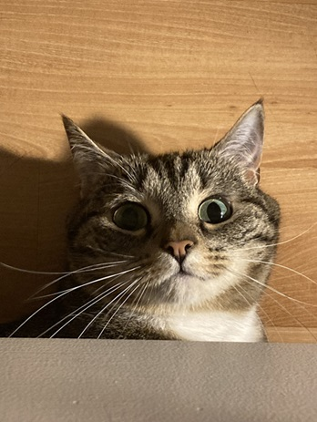
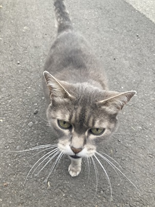

This is Misty! She is my grandparents' cat that I babysit when they go travel. She prefers to hide under my bed, but she loves being pet before she goes to sleep. This is her popping her head out from right under it!
This is a mystery cat! I often go on walks in my neighborhood and this cutie started following me one day. I haven't seen her since but she was super adorable! This is a picture of her mid-following me.
